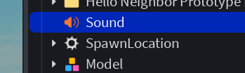
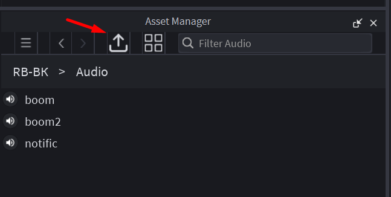
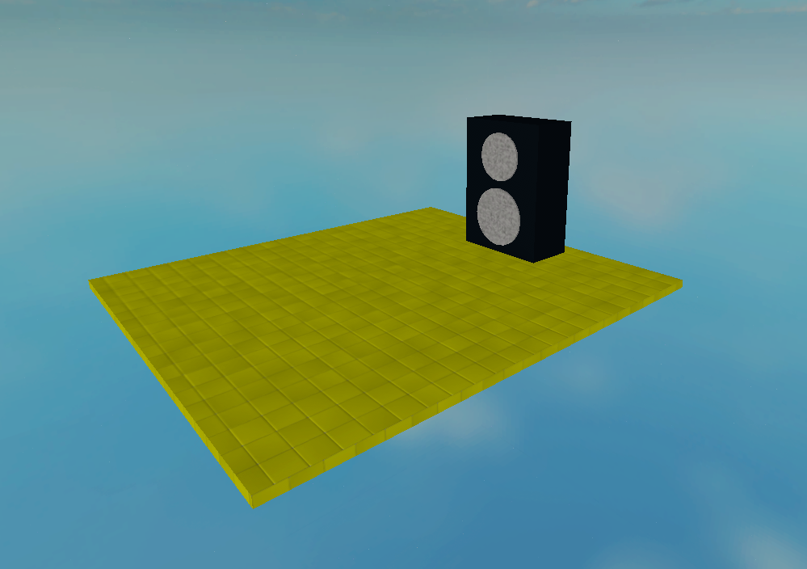
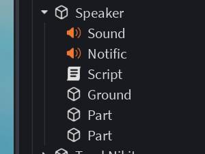
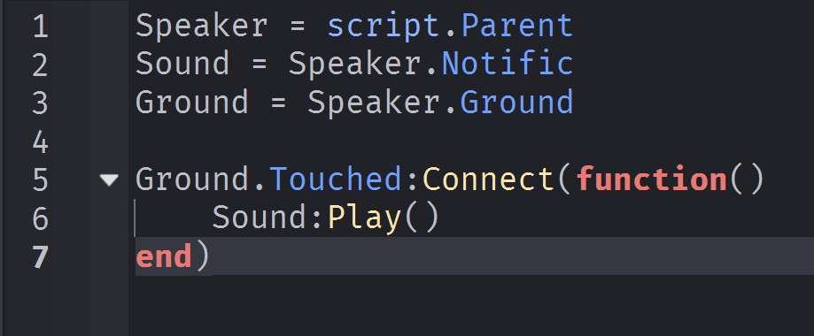
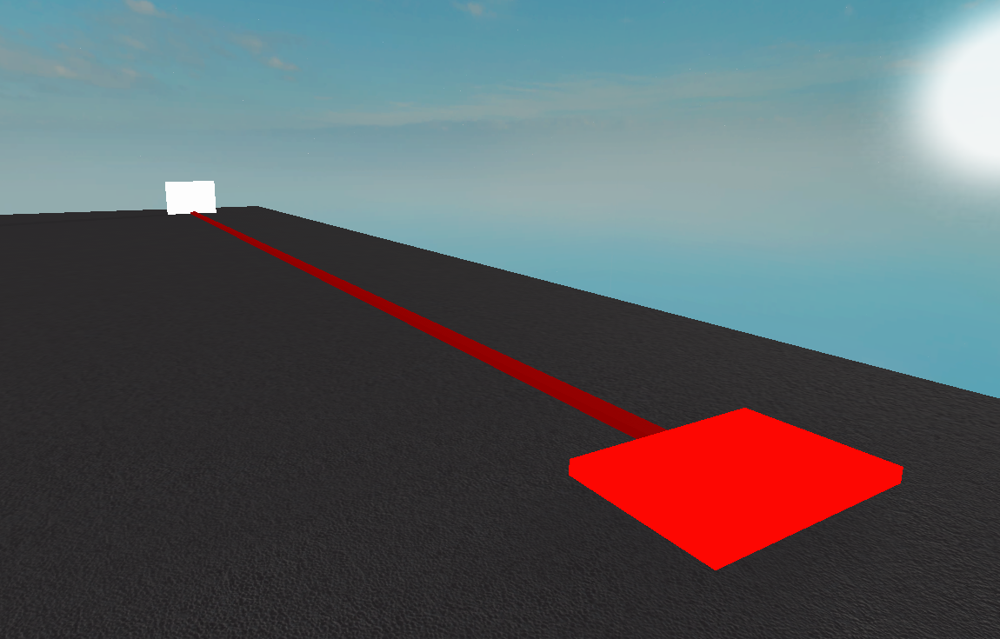
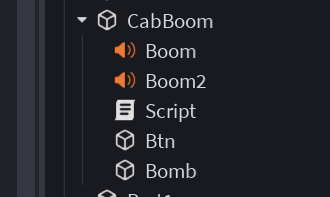
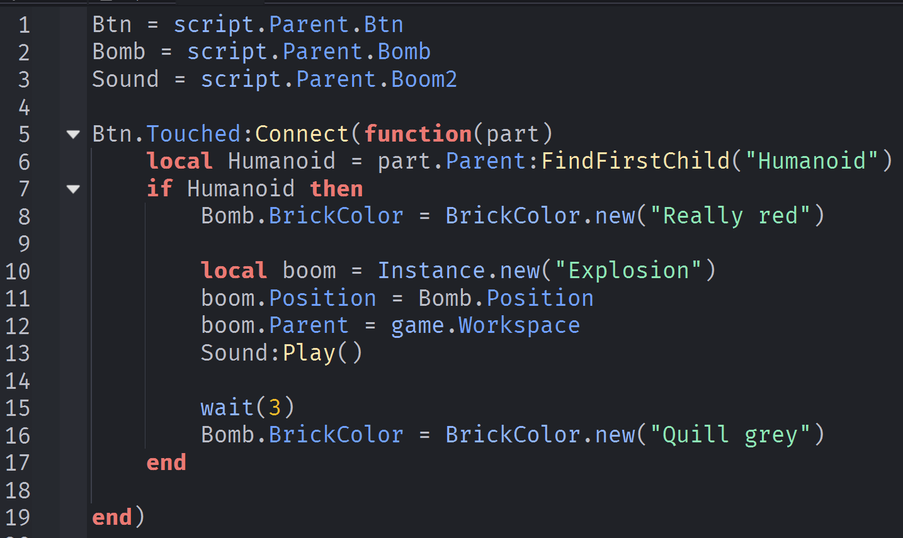

Создание игр в Roblox Studio
Sound - Добавляем звук на карту!
Sound - это?
Sound — это класс в Roblox Studio, предназначенный для воспроизведения аудиофайлов в сценах игры. Объекты класса Sound позволяют добавлять разнообразные звуковые эффекты, музыку и голосовые записи, обеспечивая интерактивность и погруженность игроков в игровой процесс.
Способы использования звуков в играх:
- Фоновое музыкальное сопровождение. Создание атмосферы с помощью фонового саундтрека.
- Звуковое оформление игровых событий. Добавление звуков шагов, стрельбы, ударов, разговоров NPC и других динамических эффектов.
- Реалистичное звучание окружения. Эффекты ветра, дождя, шум улиц и природы добавляют живость виртуальному миру.
- Голосовые команды и диалоги. Озвучка реплик героев и подсказок игрокам.
Добавляем звук на карту
Сначала нужно найти звук (файл) на компьютере или в интернете. Затем его нужно импортировать при помощи Asset Manager
Основные характеристики класса Sound:
- SoundId: Уникальный идентификатор аудиофайла, используемого в Roblox Asset Library (каталоге файлов). Например, rbxassetid://123456789.
- Volume: Уровень громкости звука (число от 0 до 1).
- Playing: Флаг, определяющий, играет ли звук в настоящий момент.
- Looped: Свойство, позволяющее установить цикличное воспроизведение.
- PlayOnRemove: Звук запускается при удалении объекта.
- Max(Min)Distance: Максимальное (минимальное) расстояние, на котором звук ещё слышен игроку.
- RollOffMode: Управляет поведением затухания звука при удалении слушателя (игрока) от источника звука.
- Attachments: Определяют точку происхождения звука, если он привязывается к конкретной детали (аттачменту).
Практика
Создаем аудиоколонку с эффектом
  Создаем Boom-эффект со звуком
  Домашкаа 🤖
Выполнить задания от преподавателя